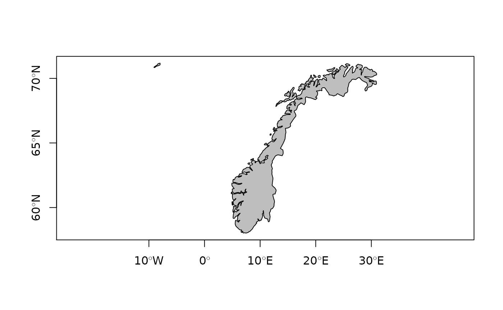
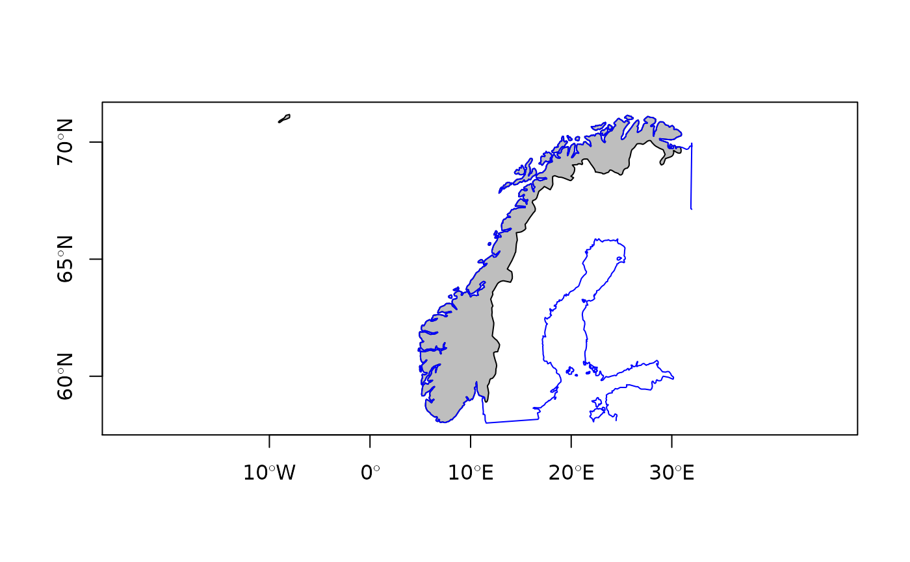

map2SpatialPolygons.RdThese functions may be used to convert map objects returned by the map function in the maps package to suitable objects defined in the sp package. In the examples below, arguments are shown for retrieving first polygons by name, then lines by window.
map2SpatialPolygons(map, IDs, proj4string = CRS(as.character(NA)), checkHoles=FALSE) map2SpatialLines(map, IDs=NULL, proj4string = CRS(as.character(NA))) pruneMap(map, xlim=NULL, ylim=NULL)
| map | a map object defined in the maps package and returned by the map function |
|---|---|
| IDs | Unique character ID values for each output Polygons object; the input IDs can be an integer or character vector with duplicates, where the duplicates will be combined as a single output Polygons object |
| proj4string | Object of class |
| checkHoles | default=FALSE, if TRUE call |
| xlim,ylim | limits for pruning a map object - should only be used for lines, because polygons will not be closed |
Any zero area output geometries are dropped, and warnings are issued.
map2SpatialPolygons returns a SpatialPolygons object and map2SpatialLines returns a SpatialLines object (objects defined in the sp package); pruneMap returns a modified map object defined in the maps package
Roger Bivand
As the examples show, retrieval by name should be checked to see whether a window is not also needed: the "norway" polygons include "Norway:Bouvet Island", which is in the South Atlantic. Here, the IDs argument is set uniformly to "Norway" for all the component polygons, so that the output object contains a single Polygons object with multiple component Polygon objects. When retrieving by window, pruning may be needed on lines which are included because they begin within the window; interior=FALSE is used to remove country boundaries in this case.
run <- FALSE if(require(maps)) run <- TRUE if (run) { nor_coast_poly <- map("world", "norway", fill=TRUE, col="transparent", plot=FALSE) range(nor_coast_poly$x, na.rm=TRUE) }#> [1] -9.098877 33.629295#> [1] 58.02095 80.47783if (run) { nor_coast_poly <- map("world", "norway", fill=TRUE, col="transparent", plot=FALSE, ylim=c(58,72)) nor_coast_poly$names }#> [1] "Norway:1" "Norway:2" "Norway:Smola" #> [4] "Norway:Froya" "Norway:5" "Norway:6" #> [7] "Norway:7" "Norway:8" "Norway:Moskenesoya" #> [10] "Norway:Vestvagoy" "Norway:Langoya" "Norway:Hinnoya" #> [13] "Norway:Senja" "Norway:14" "Norway:Arnoy" #> [16] "Norway:16" "Norway:Vannoy" "Norway:Seiland" #> [19] "Norway:Kvaloya" "Norway:Soroya" "Norway" #> [22] "Norway:Mageroya" "Norway:Jan Mayen"if (run) { IDs <- sapply(strsplit(nor_coast_poly$names, ":"), function(x) x[1]) } if (run) { nor_coast_poly_sp <- map2SpatialPolygons(nor_coast_poly, IDs=IDs, proj4string=CRS("+proj=longlat +datum=WGS84")) sapply(slot(nor_coast_poly_sp, "polygons"), function(x) length(slot(x, "Polygons"))) }#> [1] 23if (run) { nor_coast_lines <- map("world", interior=FALSE, plot=FALSE, xlim=c(4,32), ylim=c(58,72)) plot(nor_coast_lines, type="l") }if (run) { nor_coast_lines <- pruneMap(nor_coast_lines, xlim=c(4,32), ylim=c(58,72)) lines(nor_coast_lines, col="red") nor_coast_lines_sp <- map2SpatialLines(nor_coast_lines, proj4string=CRS("+proj=longlat +datum=WGS84")) plot(nor_coast_poly_sp, col="grey", axes=TRUE) }if (run) { worldmap <- map("world", fill=TRUE, plot=FALSE) worldmapPolys <- map2SpatialPolygons(worldmap, IDs=sapply(strsplit(worldmap$names, ":"), "[", 1L), proj4string=CRS("+proj=longlat +datum=WGS84")) if (rgeosStatus()) { require(rgeos) vals <- rgeos::gIsValid(worldmapPolys, byid=TRUE, reason=TRUE) print(table(sapply(strsplit(vals, "\\["), "[", 1))) } }#>#> #> #> #> #>#> #> Duplicate Rings Nested shells Self-intersection Valid Geometry #> 2 8 4 239